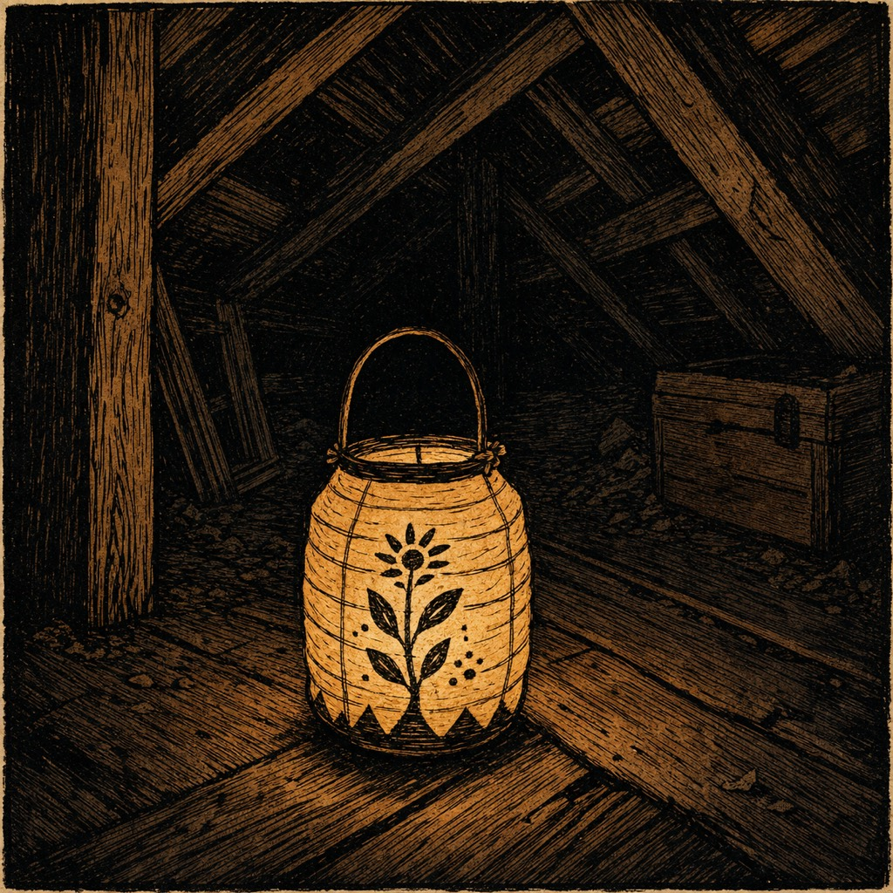

A lantern in the attic

A paper lantern with a flower on it, glowing orange in a dark wooden attic, woodcut style, beside an unopened chest.

A paper lantern with a flower on it, glowing orange in a dark wooden attic, woodcut style, beside an unopened chest.